使用小程序
话说，事情是这样的...
在加勒比海北部有一个美丽的岛国
海地
2010 年 1 月发生了 7.0 级大地震
大面积房屋倒塌
供电系统几乎全面瘫痪
因此许多救援行动不得不被迫停止
民众生活更是陷入了一团糟...
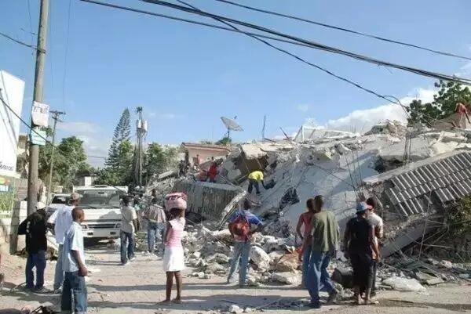
毕业于哥伦比亚大学建筑设计专业的两位妹纸
Anna Stork 和 Andrea Sreshta
在此次地震中也参与了救援行动
见到此场景深有感触
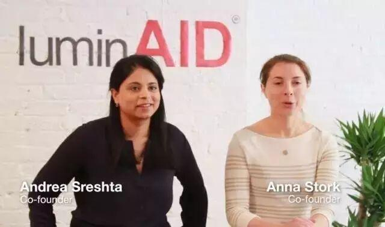
她们决心设计一款灾难用灯
来解决了这些问题
花了 4 年时间
她俩利用太阳能和发光二极管
设计出了一款充气式太阳能户外应急灯具——
LuminAID
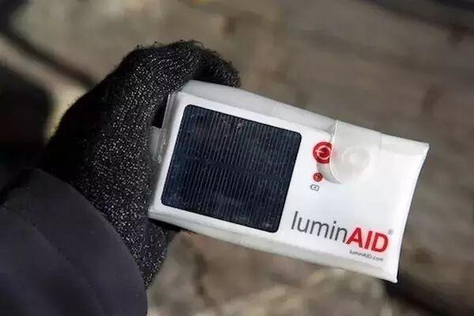
LuminAID外观酷似一个急救包
平常它只有一个手机大小
外出携带非常便捷
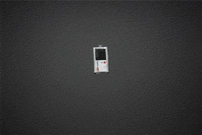
但，吹开后，却可以变大
照亮范围也很广
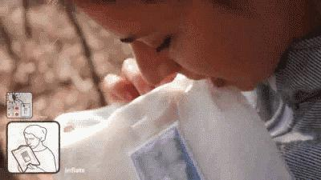
充电流程非常简单
只要打开放在太阳底下即可
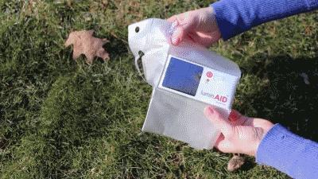
里面有一块太阳能电池
按一下就能发光了
很方便吧~
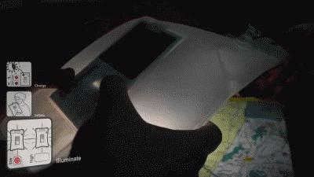
亮度最大可以达到65流明
相当于60多只蜡烛同时点亮的亮度
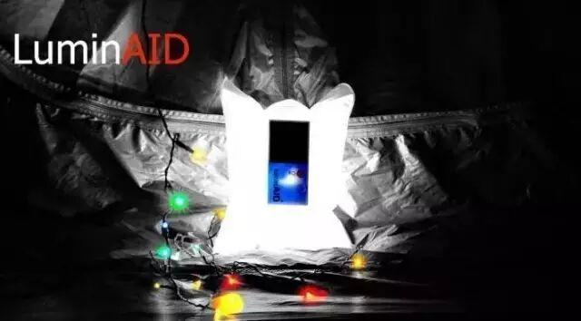
读书看报、斗地主、打麻将什么的
简直绰绰有余~
亮度还可以根据自己需要来调节
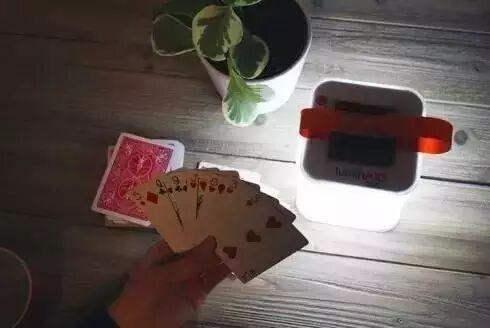
同时还有救急SOS闪亮模式
且专业版的还可以防水
可以做浮标用
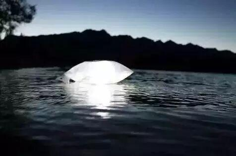
在太阳光直射下
7 个小时可以充满电
满电后最长可使用 30 个小时
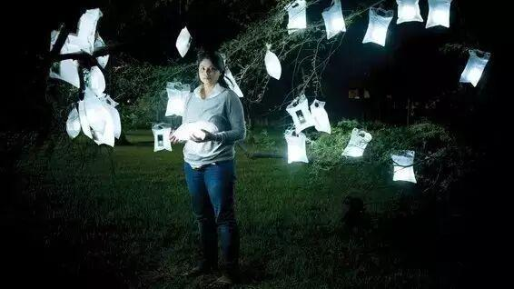
即便是阴天
也依然可以充电
只是充电时间更长一些
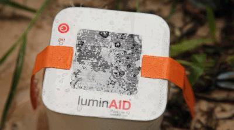
现在这款产品已经广泛应用于
联合国70多个国家的公益项目和灾难救援
包括海地艾萨克飓风、菲律宾海燕台风、尼泊尔地震
等等...
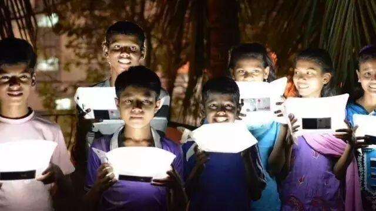
除此之外
她们还为那些无电力系统供应的地区
提供大量的太阳能灯具
千万人次因此而获益
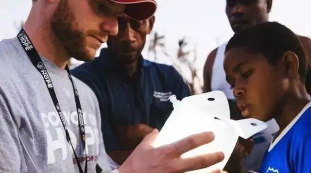
当然了
它绝对也是户外旅游的神器~
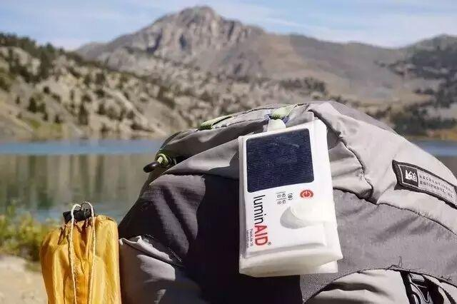
LuminAID不是阿拉丁神灯
但它却为很多人带来了光明和希望
两位女生也因此获得了多项公益大奖
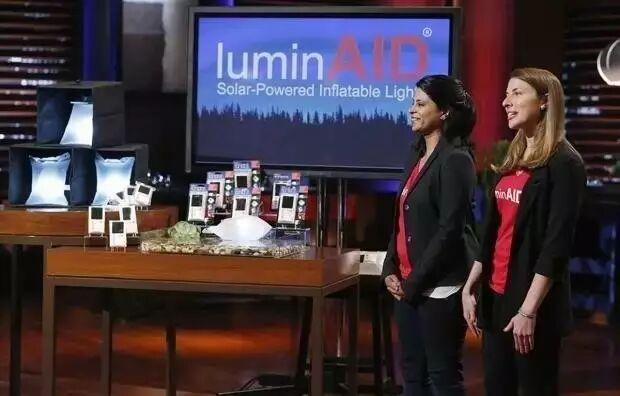
一起看看详细的介绍视频吧~
一个小小的设计却有着大大的意义
为这两位有爱的妹纸点赞~~
科技就是这样改变生活的！
信息部/张晋鹏